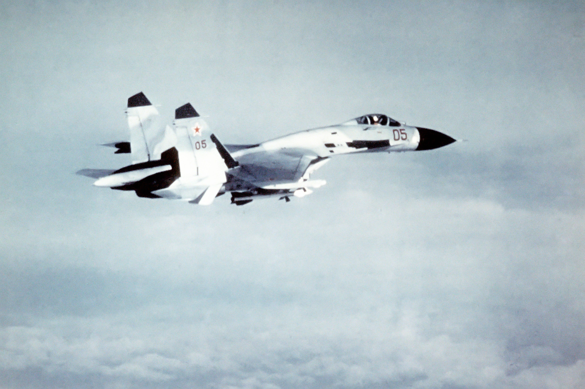
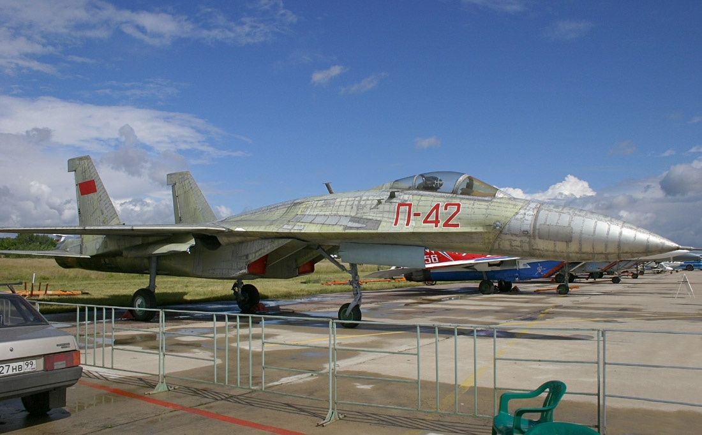

In 1969, the Soviet Union learned of the U.S. Air Force's "F-X" program, which resulted in the F-15 Eagle. The Soviet leadership soon realized that the new American fighter would represent a serious technological advantage over existing Soviet fighters. What was needed was a better-balanced fighter with both good agility and sophisticated systems. In response, the Soviet General Staff issued a requirement for a Perspektivnyy Frontovoy Istrebitel (PFI, literally "Prospective Frontline Fighter", roughly "Advanced Frontline Fighter"). Specifications were extremely ambitious, calling for long-range, good short-field performance (including the ability to use austere runways), excellent agility, Mach 2+ speed, and heavy armament. The aerodynamic design for the new aircraft was largely carried out by TsAGI in collaboration with the Sukhoi design bureau.
When the specification proved too challenging and costly for a single aircraft in the number needed, the PFI specification was split into two: the LPFI (Lyogkyi PFI, Lightweight PFI) and the TPFI (Tyazholyi PFI, Heavy PFI). The LPFI program resulted in the Mikoyan MiG-29, a relatively short-range tactical fighter, while the TPFI program was assigned to Sukhoi OKB, which eventually produced the Su-27 and its various derivatives.
The Sukhoi design, which was altered progressively to reflect Soviet awareness of the F-15's specifications, emerged as the T-10 (Sukhoi's 10th design), which first flew on 20 May 1977. The aircraft had a large wing, clipped, with two separate podded engines and a twin tail. The 'tunnel' between the two engines, as on the F-14 Tomcat, acts both as an additional lifting surface and hides armament from radar.
The T-10 was spotted by Western observers and assigned the NATO reporting name 'Flanker-A'. The development of the T-10 was marked by considerable problems, leading to a fatal crash of the second prototype, the T-10-2 on 7 July 1978, due to shortcomings in the FBW control system. Extensive redesigns followed (T-10-3 through T-10-15) and a revised version of the T-10-7, now designated the T-10S, made its first flight on 20 April 1981. It also crashed due to control problems and was replaced by T-10-12 which became T-10S-2. This one also crashed on 23 December 1981 during a high-speed test, killing the pilot. Eventually the T-10-15 demonstrator, T-10S-3, evolved into the definitive Su-27 configuration.
The T-10S-3 was modified and officially designated the P-42, setting a number of world records for time-to-height, beating those set in 1975 by a similarly modified F-15 called "The Streak Eagle". The P-42 "Streak Flanker" was stripped of all armament, radar and operational equipment. The fin tips, tail-boom and the wingtip launch rails were also removed. The composite radome was replaced by a lighter metal version. The aircraft was stripped of paint, polished and all drag-producing gaps and joints were sealed. The engines were modified to deliver an increase in thrust of 1,000 kg (2,200 lb), resulting in a thrust-to-weight ratio of almost 2:1.
The production Su-27 (sometimes Su-27S, NATO designation 'Flanker-B') began to enter VVS operational service in 1985, although manufacturing difficulties kept it from appearing in strength until 1990. The Su-27 served with both the V-PVO and Frontal Aviation. Operational conversion of units to the type occurred using the Su-27UB (Russian for "Uchebno Boevoy" - "Combat Trainer", NATO designation 'Flanker-C') twin-seat trainer, with the pilots seated in tandem.
When the naval Flanker trainer was being conceived the Soviet Air Force was evaluating a replacement for the Su-24 "Fencer" strike aircraft, and it became evident to Soviet planners at the time that a replacement for the Su-24 would need to be capable of surviving engagements with the new American F-15 and F-16. The Sukhoi bureau concentrated on adaptations of the standard Su-27UB tandem-seat trainer. However, the Soviet Air Force favoured the crew station (side-by-side seating) approach used in the Su-24 as it worked better for the high workload and potentially long endurance strike roles. Therefore, the conceptual naval side-by-side seated trainer was used as the basis for development of the Su-27IB (Russian for "Istrebityel Bombardirovshchik" - "Fighter Bomber") as an Su-24 replacement in 1983. The first production airframe was flown in early 1994 and renamed the Su-34 (NATO reporting name 'Fullback').
.jpg)
Development of a version for the Soviet Navy called the Su-27K (Russian for "Korabyelny" - "Shipborne", NATO designation 'Flanker-D') commenced not long after the development of the main land-based type. Some of the T10 demonstrators were modified to test features of navalized variants for carrier operations. These modified demonstrators led to specific prototypes for the Soviet Navy, designated "T10K" (Korabyelny). The T10Ks had canards, an arresting hook and carrier landing avionics as well as a retractable inflight re-fueling probe. They did not have the landing gear required for carrier landings or folding wings. The first T10K flew in August 1987 flown by the famous Soviet test pilot Viktor Pugachev (who first demonstrated the cobra manoeuvre using an Su-27 in 1989), performing test take-offs from a land-based ski-jump carrier deck on the Black Sea coast at Saky in the Ukrainian SSR. The aircraft was lost in an accident in 1988.
At the time the naval Flanker was being developed the Soviets were building their first generation of aircraft carriers and had no experience with steam catapults and did not want to delay the introduction of the carriers. Thus it was decided to use a take-off method that did not require catapults by building up full thrust against a blast deflector until the aircraft sheared restraints holding it down to the deck. The fighter would then accelerate up the deck onto a ski jump and become airborne.
The production Su-27K featured the required strengthened landing gear with a two-wheel nose gear assembly, folding stabilators and wings, outer ailerons that extended further with inner double slotted flaps and enlarged leading-edge slats for low-speed carrier approaches, modified LERX (Leading Edge Root eXtension) with canards, a modified ejection seat angle, upgraded FBW, upgraded hydraulics, an arresting hook and retractable in-flight refuelling probe with a pair of deployable floodlights in the nose to illuminate the tanker at night. The Su-27K began carrier trials in November 1989, again with Pugachev at the controls, on board the first Soviet aircraft carrier, called "Tbilisi" at the time and formal carrier operations commenced in September 1991.
Development of the naval trainer, called the Su-27KUB (Russian for "Korabyelny Uchebno-Boyevoy" - "Shipborne Trainer-Combat"), began in 1989. The aim was to produce an airframe with dual roles for the Navy and Air Force suitable for a range of other missions such as reconnaissance, aerial refuelling, maritime strike, and jamming. This concept then evolved into the Su-27IB (Su-34 "Fullback") for the Soviet Air Force. The naval trainer had a revised forward fuselage to accommodate a side-by-side cockpit seating arrangement with crew access via a ladder in the nose-wheel undercarriage and enlarged canards, stabilisers, fins and rudders. The wings had extra ordnance hard-points and the fold position was also moved further outboard. The inlets were fixed and did not feature FOD suppression hardware. The central fuselage was strengthened to accommodate 45 tonnes (99,000 pounds) maximum gross weight and internal volume was increased by 30%. This first prototype, the T-10V-1, flew in April 1990 conducting aerial refuelling trials and simulated carrier landing approaches on the Tbilisi. The second prototype, the T-10V-2 was built in 1993 and had enlarged internal fuel tanks, enlarged spine, lengthened tail and tandem dual wheel main undercarriage.